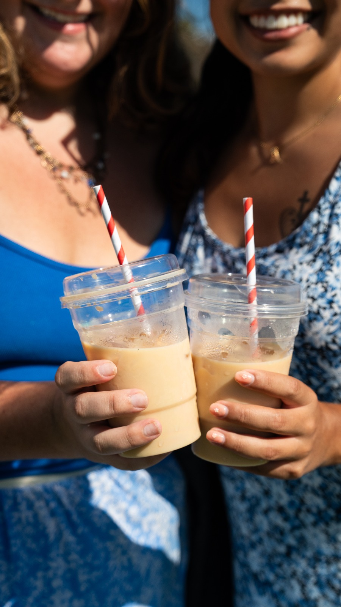
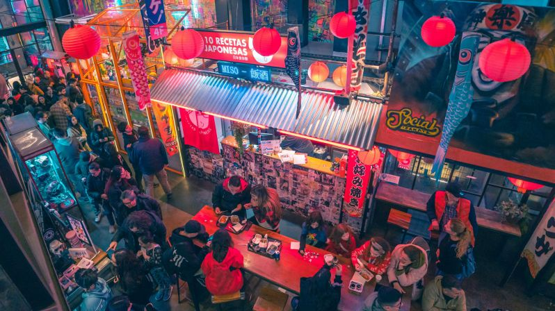
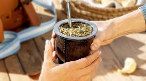
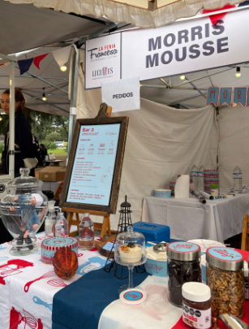

Nuestros editoriales
Notas, entrevistas y coberturas de la escena cultural y feriante de Buenos Aires.

Gastronomía
Cultura
"Durante dos días, es un momento de disfrutar juntos alrededor de una buena comida": la palabra del embajador Romain Nadal
Florencia Santone · Mayo 2026
Leer

Gastronomía
Crónica
Dos días de aromas, música y multitudes: así se vivió la Food Fest en La Rural
Úrsula Lombardo · Mayo 2026
Leer

Cultura
Gastronomía
Matsuri en Villa Crespo: el festival japonés que llegó a los porteños
Valentina García · Mayo 2026
Leer

Gastronomía
Cultura
Mate, chacarera y escarapela: la Expo Mate celebró el 25 de Mayo como se debe
Chiara Natale · Mayo 2026
Leer

Gastronomía
Emprendimientos
Buenos Aires Market: un espacio de crecimiento y gastronomía
Valentina García Iaria · Mayo 2026
Leer
🍕
Gastronomía
Crónica
Fugazzeta Fest en La Boca: pizza, historia y murga en la primera edición
Redacción Modo Feria · Mayo 2026
Leer

Entrevista
Emprendimiento
"Prefiero hacer esto toda la vida": la historia de Marcos Speroni y Morris Mousse
Redacción Modo Feria · Mayo 2026
Leer